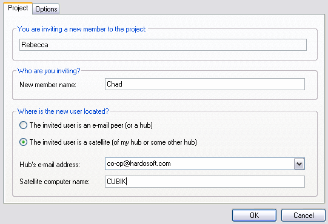
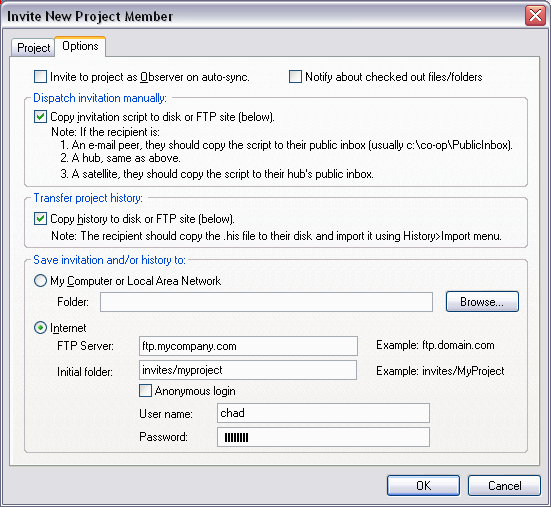

The administator can invite a new project member to join the project. An invitation script is sent to the invitee with all the data needed to create a project enlistment.
Note: Do not send invitation in response to a join request. Just unpack the request.
You can Invite a person to the project by doing the following:

After you Ok this dialog, Code Co-op wraps up the project and sends it to the new project member.
In the "Options" tab (version Pro only) you may select an alternative way of propagating the invitation: You can save it to the local disk, CD, network share; or upload it to an FTP site:

You also have the option of exporting your history for the invitee to import.
When you save the invitation, you are responsible for notifying the invitee. The invitee must then use Code Co-op's Project>Open Invitation menu item to (download and) accept it.
Note: When inviting a satellite user, it is very important to deliver the invitation to their Hub and not directly to the Satellite. The invitation contains important routing information for the Hub, without which it wouldn't be able to forward scripts to the Satellite.
The exported history can be copied anywhere on the invitee's machine and imported into the project in question.
When you receive an Invitation, you are notified by the dispatcher:
If you have a good reason, you can always reject the invitation by checking the Reject button.